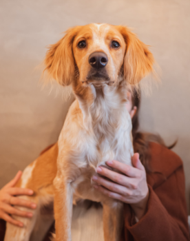

Epagnol Breton


Caracteristicas da Raça
Ficha Tecnica- Grupo: Cães de Parar,
- Finalidade: cão de caça (sinalizar a caça),
- País de Origem: França,
- Porte: médio,
- Peso ideal: de 14kg a 18kg,
- Esperança Média de Vida: entre 12 a 14 anos,
- Outros Nomes: Brittany.

Cores da Pelagem
Existem 2 tipos:- Bicolor
- Tricolor
1.1. Branco e Laranja,
1.2. Branco e preto;
1.3. Branco e Castanho
2.1. Branco, Laranja e Castanho
2.2. Branco, Laranja e Preto;

Temperamento
"Uma expressão que os admiradores do Épagneul gostam de lhe associar é “as máximas qualidades num volume mínimo”. Robusto e resistente, continua a ser um popular cão de caça, cobrindo tanto em terra como na água e trazendo a peça ao dono praticamente intacta, o que leva os caçadores a afirmarem que tem o “dente doce”.
Tem sido também cada vez mais apreciado como cão de companhia, sendo, possivelmente, a raça nativa mais popular de França. O facto de libertar muito pouco odor e de ter um porte médio contribuem para que cada vez mais citadinos escolham o Épagneul Breton para se juntar à sua família.
Leal, obediente, equilibrado, inteligente e meigo, é um cão que procura sempre agradar aos seus donos e é bastante sociável, apreciando as brincadeiras com os mais novos e os longos passeios ao ar livre. Sendo fácil de treinar, é uma raça extremamente sensível, tornando-se bastante tímida e reservada se viver num ambiente violento, crispado ou stressante. Como acontece com todas as raças, mas especialmente com esta, o treino deve assentar no reforço positivo para que se torne num cão confiante.
O Épagneul Breton, ou Brittany, adequa-se bastante melhor a famílias activas, uma vez que se não for suficientemente exercitado fica muito inquieto e stressado, ladrando excessivamente. Não se pode nunca esquecer que esta é uma raça orientada para o trabalho, pelo que se passar muito tempo sozinha e sem fazer nada irá desenvolver problemas comportamentais e psicológicos."
in: https://www.caonosso.pt/guia-de-racas/racas-de-caes-medios/epagneul-breton


Código de Tabela
Tabela
| Titulo | ||
|---|---|---|
| Subtitulo 1 | Subtitulo 2 | subtitulo 3 |
| Cell Spanning in 3 Rows (2nd and 3rd merged) | Cell Spanning in 2 Rows (1st and 2nd Cell merged) | 1st Cell |
| 2nd Cell | ||
| 3rd Cell | ||
| 3rd Cell | 4th Cell |
| Tabela de Alturas | ||
|---|---|---|
| Machos | 47cm a 52cm | |
| Fêmeas | 46cm a 51cm |  |